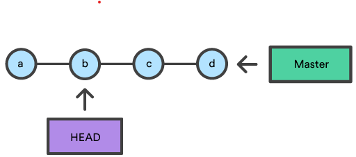
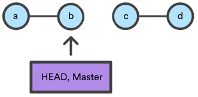

using “git merge” that allows merging two branches(e.g. remote branches and local branches) that have no common base by default.
git merge –allow-unrelated-histories to force the merge to happen
Undo changes / used for operate wrongly “git reset” has three primary forms of invocation. –soft, –mixed, –hard. git reset is similar in behavior to git checkout, where git checkout solely operates on the HEAD of ref pointer, however, git reset will move the HEAD ref pointer and the current branch ref pointer.
example of a sequence of commits
git checkout b

git reset b

Main options
–hard
the most direct, DANGEROUS, and frequently used option
–mixed
the stagin index is reset to the state of the specified commit